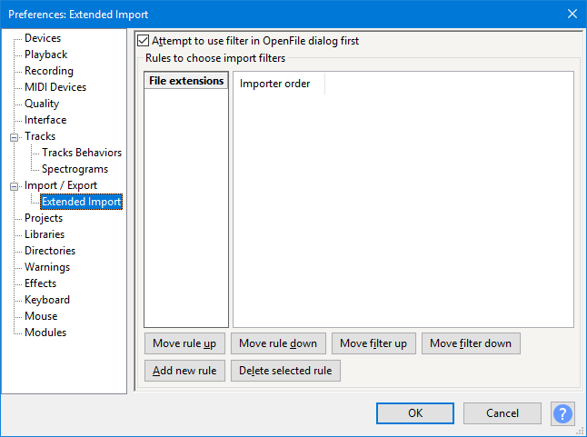

Extended Import Preferences
Extended Import preferences let you designate the order in which specific import libraries are tried when importing audio files with named extensions, with an option to over-ride the "Open" and "Import Audio" file type choice.
- Accessed by: (on a Mac )
- 
- Extended Import Preferences.
- Click on any other Preferences sections in the above image to read about those Preferences.
Attempt to use filter in OpenFile dialog first: This checkbox controls the importer that is tried first when importing a particular file type using either or .
- If checked (default), the file type choice made in the Open and Import Audio dialogs always determines which importer will try first to import a file. This applies even if there is a rule set (see below) to try first a different importer for that file type.
- If unchecked, Audacity will always try first the default importer for the file type irrespective of the file type choice, unless a rule is set that asks for another importer to be tried first.
If using or dragging in audio files, "Attempt to use filter in OpenFile dialog first" has no effect; Audacity will always try first the default importer for the file type, unless a rule is set that asks for another importer to be tried first.
- See Import Filtering and Importer Order for more help.
Rules to choose import filters
- "File extensions" and "Importer order" list
- A combination of a file extension with the importer order list creates a "rule". When attempting to import a file with the given extension Audacity will choose the importer according to the rule starting at the top of the "Importer order" list and going down the list until it finds an importer that accepts the file.
- File extensions: If a file has this extension, use the importers listed, in the order shown in the "Importer order" list. Choose "Add new rule" as below to add a rule, then either overtype in the selected rule, or double-click or press F2 to open the rule for editing.
Always retain one or more asterisks * at the start of the rule, then add the required extension. A single asterisk at the start of the rule indicates that any file with the extension following the asterisk will trigger the rule. Note that spaces in the extension may display an error dialog. You can choose to ignore the spaces or let Audacity trim the spaces.
- File extensions: If a file has this extension, use the importers listed, in the order shown in the "Importer order" list. Choose "Add new rule" as below to add a rule, then either overtype in the selected rule, or double-click or press F2 to open the rule for editing.
EXAMPLES:
- *.MP3 or *MP3 with "MP3 Files" at the top of the order tries the MP3 importer first when importing any MP3 file.
- *w*.WAV with "FFmpeg-compatible files" at the top of the order tries the FFmpeg importer first when importing any WAV file with a "w" or "W" in the file name (or any WAV with "w" in the file name on a case-sensitive operating system).
- .MP3 with any order in the list ignores the rule because there is no asterisk, so will try the MP3 importer first irrespective.
- Importer order: For the file extension selected in the "File extension" column, attempt to use these importers in the order listed.
- Move the selected rule up in the list of rules.
- Move the selected rule down in the list of rules.
- Move the selected filter up in the Importer order list for this rule.
- Move the selected filter down in the Importer order list for this rule.
- Creates a new rule. A default rule with a single asterisk * is created with all filters listed in their default order.
- Removes the selected rule from the list.
| You can drag a filter to change its order in the Importer order list. |